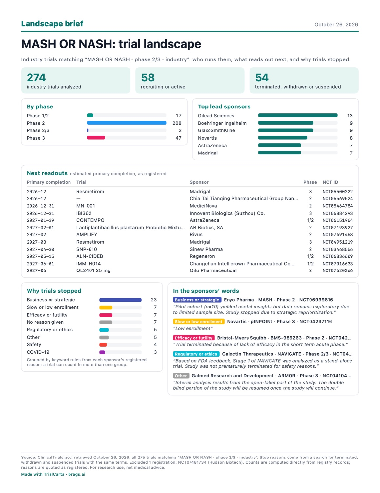

MASH clinical trial landscape: October 2026
Industry-sponsored phase 2 and 3 trials of MASH (metabolic dysfunction-associated steatohepatitis, formerly NASH) registered on ClinicalTrials.gov: who is running the late-stage trials, what reads out in the next year, how long trials take, and why they stop. Every number below is counted from registry records with TrialCarta, with the trial IDs to check it.
The 24 ongoing phase 3 trials
Phase 3 trials recruiting, active or not yet recruiting, grouped by the drug named in the registry. Drug names are as registered; some sponsors list a code name.
| Drug | Lead sponsor | Trials | ClinicalTrials.gov IDs |
|---|---|---|---|
| Efimosfermin alfa | GlaxoSmithKline | 4 | NCT07221227 (ZENITH-1), NCT07221188 (ZENITH-2), NCT07701993 (NEBULA-1), NCT07704892 (NEBULA-2) |
| Survodutide | Boehringer Ingelheim | 3 | NCT06632444, NCT06632457, NCT07850063 |
| Efruxifermin | Akero Therapeutics | 3 | NCT06215716, NCT06528314, NCT06161571 |
| Resmetirom (MGL-3196) | Madrigal Pharmaceuticals | 3 | NCT03900429 (MAESTRO-NASH), NCT04951219, NCT05500222 |
| Pegozafermin | Hoffmann-La Roche | 2 | NCT06318169, NCT06419374 |
| Semaglutide | Novo Nordisk | 1 | NCT04822181 (ESSENCE) |
| Tirzepatide and retatrutide | Eli Lilly and Company | 1 | NCT07165028 |
| Pemvidutide | Altimmune | 1 | NCT07795164 (PERFORMA) |
| IVA337 | Inventiva Pharma | 1 | NCT04849728 (NATiV3) |
| ALN-CIDEB | Regeneron Pharmaceuticals | 1 | NCT07854782 |
| IBI362 | Innovent Biologics | 1 | NCT06884293 |
| DR10624 | Zhejiang Doer Biologics | 1 | NCT07693777 |
| HSK31679 | Haisco Pharmaceutical | 1 | NCT07581951 |
| LAENNEC (human placenta hydrolysate) | Green Cross Wellbeing | 1 | NCT06493799 |
Sponsors are the lead sponsor named in each record, which can lag behind acquisitions.
Readouts due in the next 12 months
Seventeen ongoing trials have an estimated primary completion date between now and September 2027. Four are phase 3: two resmetirom studies from Madrigal (December 2026 and March 2027), Innovent's IBI362 (December 2026) and Inventiva's NATiV3 (September 2027). Dates are the sponsors' own estimates as registered.
| Primary completion | Drug | Lead sponsor | Phase | Trial |
|---|---|---|---|---|
| 2026-12 | Not named in the record | Chia Tai Tianqing Pharmaceutical Group | 2 | NCT06569524 |
| 2026-12 | Resmetirom | Madrigal Pharmaceuticals | 3 | NCT05500222 |
| 2026-12-31 | MN-001 | MediciNova | 2 | NCT05464784 |
| 2026-12-31 | IBI362 | Innovent Biologics | 3 | NCT06884293 |
| 2027-01-29 | AZD9550 (CONTEMPO) | AstraZeneca | 1/2 | NCT06151964 |
| 2027-02 | HU6 (AMPLIFY) | Rivus Pharmaceuticals | 2 | NCT07491458 |
| 2027-02-01 | Lactiplantibacillus plantarum probiotic mixture | AB Biotics | 2 | NCT07193927 |
| 2027-03 | Resmetirom | Madrigal Pharmaceuticals | 3 | NCT04951219 |
| 2027-04-30 | SNP-610 | Sinew Pharma | 2 | NCT03468556 |
| 2027-05-15 | ALN-CIDEB | Regeneron Pharmaceuticals | 1/2 | NCT06836609 |
| 2027-06 | QL2401 | Qilu Pharmaceutical | 2 | NCT07620366 |
| 2027-06-01 | IMM-H014 | Changchun Intellicrown Pharmaceutical | 1/2 | NCT07016633 |
| 2027-06-04 | UBT251 | The United Bio-Technology (Hengqin) | 2 | NCT07145151 |
| 2027-08-05 | BI 3802876 | Boehringer Ingelheim | 2 | NCT07325526 |
| 2027-08-10 | ALN-PNP | Regeneron Pharmaceuticals | 1/2 | NCT05648214 |
| 2027-09-15 | ECC4703 | Eccogene | 2 | NCT07288138 |
| 2027-09-30 | IVA337 (NATiV3) | Inventiva Pharma | 3 | NCT04849728 |
How long MASH trials take, and which readouts are late
Of the completed phase 2 trials with registered start and actual primary completion dates, 132 in all, the median took 21 months from start to primary completion; the middle half took 14 to 29 months. Only 9 completed phase 3 trials have those dates, too few to give a typical duration.
Six ongoing trials have passed their estimated primary completion date without an actual date in the registry. That usually means the sponsor hasn't updated the record yet, not necessarily that the trial is delayed, but it's worth a look if you track these programs.
| Trial | Drug | Lead sponsor | Estimated primary completion | Record last updated |
|---|---|---|---|---|
| NCT05385978 | APHD-012 | Aphaia Pharma US | 2024-11-11 | 2024-10-16 |
| NCT05462353 | ASC41 | Gannex Pharma | 2025-05-10 | 2025-01-08 |
| NCT06493799 | LAENNEC | Green Cross Wellbeing | 2026-03-31 | 2026-02-25 |
| NCT05692492 | ZSP1601 | Guangdong Raynovent Biotech | 2026-06-16 | 2025-03-19 |
| NCT06322628 | VSA006 | Visirna Therapeutics HK | 2026-07 | 2026-03-12 |
| NCT07308548 | Not named in the record | Hinova Pharmaceuticals | 2026-08-13 | 2025-12-29 |

Why MASH trials stopped
54 trials were terminated, withdrawn or suspended. Grouping each sponsor's registered reason by keyword: business or strategic decisions account for 23, slow or low enrollment 7, lack of efficacy 7, regulatory or ethics reasons 5, safety 4, COVID-19 3 and other reasons 5, while 7 registered no reason. A trial can count in more than one group.
The brief below has the full picture on one page, with sponsors' own words for each kind of reason.

Download the brief (PDF)How this was made
Source: ClinicalTrials.gov, retrieved October 26, 2026. Search: condition "MASH OR NASH", phase 2 or 3 (including phase 1/2 and 2/3), interventional, industry lead sponsor: 275 trials. One registration titled as a mock was left out, leaving 274. Reasons for stopping are grouped by keyword rules from each sponsor's registered text. Everything here is counted directly from registry records; nothing is estimated by a model. For research use; not medical advice.
Want this for your indication?
TrialCarta builds this landscape for any condition, drug or sponsor in minutes, and compares it with your own protocol privately on your Mac.
Request a demo